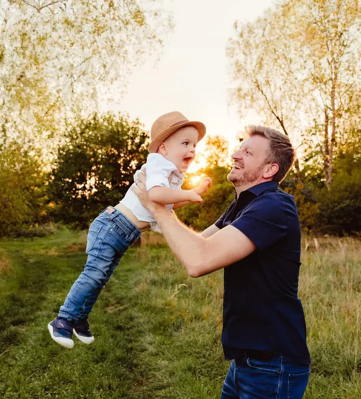
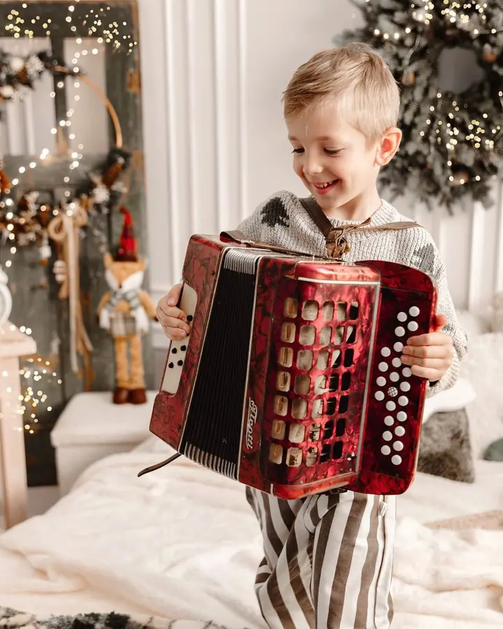
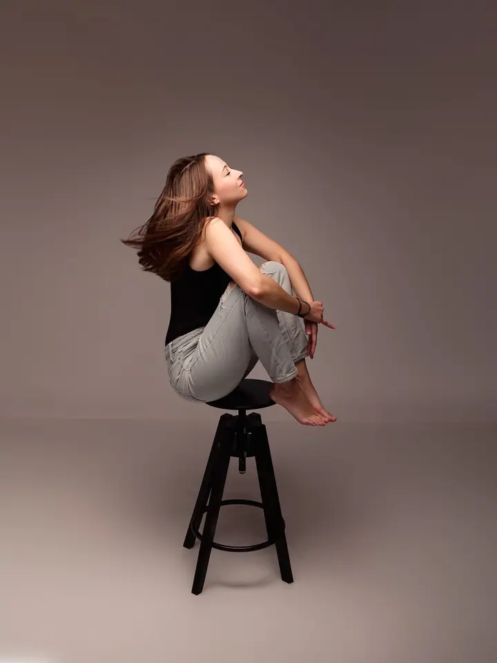

Rodinné focení
Focení celé rodiny venku v přírodě nebo u mě ve fotostudiu. Rodiče, malé děti i ty už dospívající, všichni pohromadě.

Jmenuji se Michaela Uhrová a jsem rodinná fotografka z Tvrdonic na Břeclavsku. Fotím rodiny venku, miminka ve svém fotostudiu i svatby. Hlavně ty chvíle, které jinak ryc…
Rezervovat termínVěřím, že existuje jeden způsob, jak zastavit čas, a to je fotografie. Proto fotím rodiny, děti a miminka, aby vám z let, kdy jsou malí, zůstalo víc než jen vzpomínky.


Moje fotostudio najdete v Tvrdonicích na Náměstí Míru. Je tu klid a teplo pro newborn focení, rodinné fotky i glamour portréty. Když je hezky, ráda vyrazím ven do přírody, nejraději k večeru, kdy je světlo nejměkčí.
Kromě rodin fotím také těhotenské focení, narozeniny a svatby. Volné termíny najdete v mém rezervačním systému, případně mi napište nebo zavolejte.
Co fotím
Focení celé rodiny venku v přírodě nebo u mě ve fotostudiu. Rodiče, malé děti i ty už dospívající, všichni pohromadě.
Klidné focení miminek v prvních dnech ve fotostudiu v Tvrdonicích. Fotím miminka samotná, se sourozenci i s rodiči.
Fotím váš svatební den i společné chvíle novomanželů, třeba při západu slunce mezi vinohrady.
Památka na čas, kdy čekáte miminko. Ve studiu nebo venku, podle toho, co je vám bližší.
Postup
Volné termíny najdete v mém online rezervačním systému. Můžete mi také napsat zprávu nebo zavolat.
Probereme, co chcete fotit, jestli ve studiu v Tvrdonicích, nebo venku, a co si vzít na sebe.
Na focení si dáme čas. Hlavně u dětí a miminek jedeme jejich tempem, žádný spěch.
Fotky pečlivě vyberu a upravím a pošlu vám je, abyste si je mohli užít i vytisknout.
Otázky
Mám vlastní fotostudio v Tvrdonicích na Náměstí Míru 110/6 (okres Břeclav). Rodinné focení a svatby fotím i venku v okolí.
Nejjednodušeji přes můj online rezervační systém, kde vidíte volné termíny. Můžete mi také napsat zprávu nebo zavolat.
Newborn focení se obvykle dělá v prvních dnech po narození, kdy miminka nejvíc spí. Termín je dobré si předběžně domluvit ještě před porodem.
Aktuální ceník na rok 2026 vám ráda pošlu, stačí mi napsat. Najdete ho i v uložených příbězích na mém Instagramu.